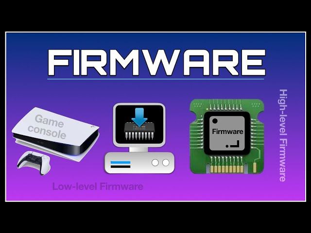

Ovladače zařízení
Ovladače zařízení (Device Drivers) jsou klíčové programy umožňující komunikaci mezi operačním systémem a technickým vybavením. Standardní ovladače pro běžná zařízení jsou často součástí moderních OS, avšak při potřebě instalace externích ovladačů je důležité vybrat správný, aby nedošlo k nefunkčnosti zařízení či dokonce celého OS.
Firmware a jeho Úloha
Firmware představuje programové vybavení řídící vestavěné systémy, a například v počítačích je BIOS základním firmwarem. Aktualizace firmware se dnes často provádí pomocí flash pamětí. BIOS zajišťuje start počítače a umožňuje konfiguraci základní desky a připojeného hardware, přičemž dříve se aktualizace firmware realizovala výměnou paměťového média obsahujícího firmware.
Plug and Play a Automatická Konfigurace Hardware
Standard Plug and Play (PnP) v operačních systémech, zejména ve Windows, zajišťuje automatizovanou detekci nově připojeného hardware a následně i automatické vyhledání a nainstalování potřebných ovladačů. Tato funkcionalita usnadňuje uživatelskou zkušenost při připojování nových zařízení, avšak správný průběh je závislý na dostupnosti vhodných ovladačů. V případě, že OS nenalezne příslušný ovladač, je nutné použít externí instalátor z dodaného disku nebo stáhnout odpovídající ovladač ze stránek výrobce. Nesprávně zvolený ovladač může způsobit problémy, včetně nefunkčnosti zařízení či operačního systému.
Utility a Jejich Účel
Utility jsou menší pomocné programy, které slouží k provádění servisních operací potřebných pro správné fungování počítače. Patří sem komprimační programy, diagnostické a testovací nástroje, a různé konverzní programy. Některé utility jsou integrovány přímo do operačních systémů, jako je například Správce úloh ve Windows, který umožňuje správu spuštěných programů a sledování využití systémových zdrojů.
